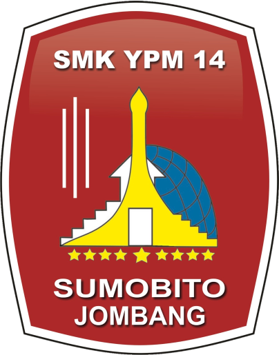

SMK YPM 14 Sumobito — Menumbuhkan karakter unggul melalui budaya organisasi. Klik Mulai Presentasi untuk memulai.
Definisi Budaya, Organisasi, dan Budaya Kerja — landasan pemahaman.
Arah perilaku organisasi, etika, identitas, dan kualitas layanan.
Clan, Market, Hierarchy, dan Adhocracy — ciri & contoh.
Berilmu, Beramal, dan Bertaqwa — pedoman setiap tindakan.
Empat aspek: manfaat masyarakat, kualitas, disiplin, inovasi.
Catur Dharma menjadi pijakan nilai & tanggung jawab sosial.
Kurikulum, kegiatan sosial (Pasukan Semut, GNK), reward, & monitoring.
Disiplin, lingkungan kondusif, karakter tangguh, dan mutu meningkat.
Budaya organisasi YPM sebagai pondasi karakter unggul dan manfaat bagi masyarakat.